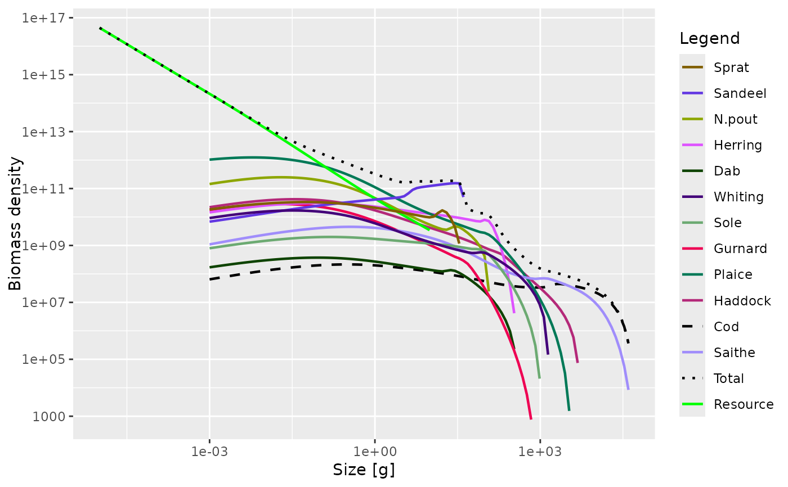

![[Experimental]](figures/lifecycle-experimental.svg) Used for setting the colour and type of lines representing "Total",
"Resource", "Fishing", "Background", "External" and possibly other categories
in plots.
Used for setting the colour and type of lines representing "Total",
"Resource", "Fishing", "Background", "External" and possibly other categories
in plots.
Usage
setColours(params, colours)
getColours(params)
setLinetypes(params, linetypes)
getLinetypes(params)Value
setColours: The MizerParams object with updated line colours
getColours(): A named vector of colours
setLinetypes(): The MizerParams object with updated linetypes
getLinetypes(): A named vector of linetypes
Details
Colours for names that already had a colour set for them will be overwritten by the colour you specify. Colours for names that did not yet have a colour will be appended to the list of colours.
Do not use this for setting the colours or linetypes of species, because
those are determined by setting the linecolour and linetype variables in
the species parameter data frame.
You can use the same colours in your own ggplot2 plots by adding
scale_colour_manual(values = getColours(params)) to your plot. Similarly
you can use the linetypes with
scale_linetype_manual(values = getLinetypes(params)).
Examples
params <- setColours(NS_params, list("Resource" = "red","Total" = "#0000ff"))
params <- setLinetypes(NS_params, list("Total" = "dotted"))
# Set colours and linetypes for species
species_params(params)["Cod", "linecolour"] <- "black"
species_params(params)["Cod", "linetype"] <- "dashed"
plotSpectra(params, total = TRUE)

getColours(params)
#> Sprat Sandeel N.pout Herring Dab Whiting Sole
#> "#815f00" "#6237e2" "#8da600" "#de53ff" "#0e4300" "#430079" "#6caa72"
#> Gurnard Plaice Haddock Cod Saithe Total Resource
#> "#ee0053" "#007957" "#b42979" "black" "#a08dfb" "black" "green"
#> Background Fishing External
#> "grey" "red" "grey"
getLinetypes(params)
#> Sprat Sandeel N.pout Herring Dab Whiting Sole
#> "solid" "solid" "solid" "solid" "solid" "solid" "solid"
#> Gurnard Plaice Haddock Cod Saithe Total Resource
#> "solid" "solid" "solid" "dashed" "solid" "dotted" "solid"
#> Background External
#> "solid" "solid"